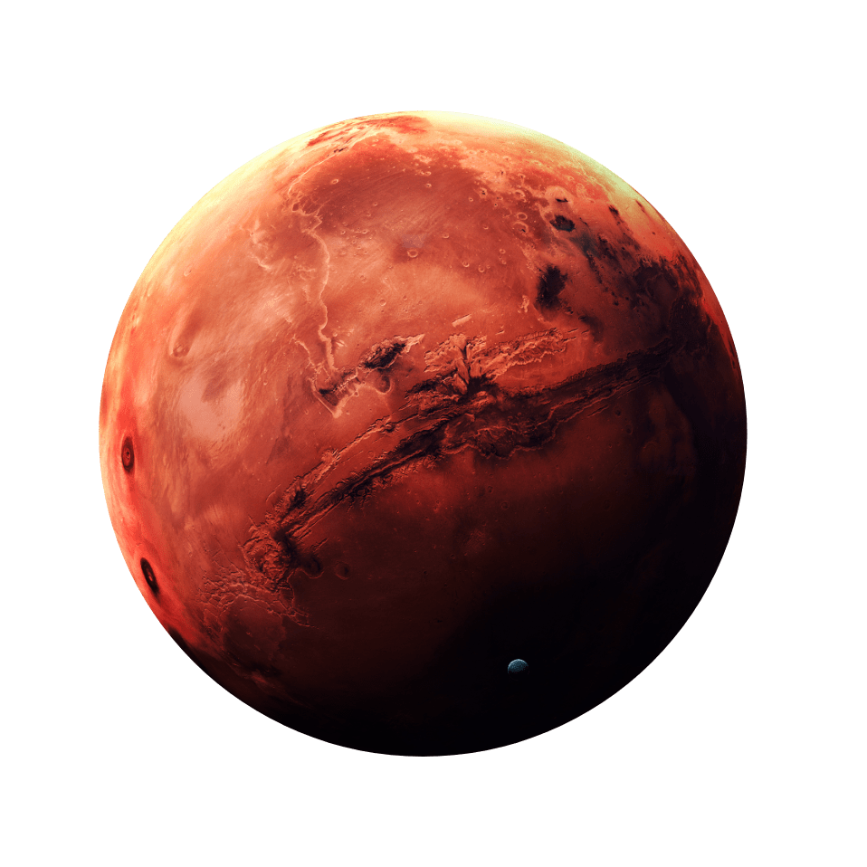
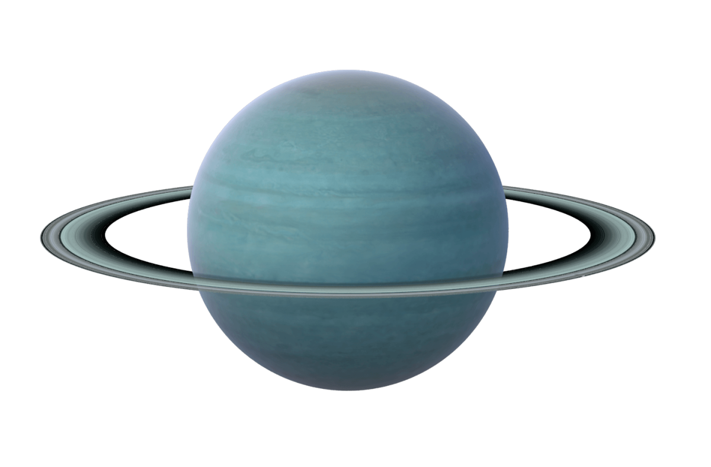

Здесь вы можете узнать описание планет.
Земля - третья планета от Солнца и единственный известный астрономический объект, на котором существует жизнь. В то время как большие объемы воды можно найти по всей Солнечной системе, только Земля поддерживает жидкую поверхностную воду. Около 71% поверхности Земли состоит из океана, который затмевает полярные льды, озера и реки Земли. Остальные 29% поверхности Земли - это суша, состоящая из континентов и островов. Поверхностный слой Земли образован несколькими медленно движущимися тектоническими плитами, которые взаимодействуют, образуя горные хребты, вулканы и землетрясения.
Мерку́рий — наименьшая планета Солнечной системы и самая близкая к Солнцу. Названа в честь древнеримского бога торговли — быстрого Меркурия, поскольку она движется по небу быстрее других планет. Её период обращения вокруг Солнца составляет всего 87,97 земных суток — самый короткий среди всех планет Солнечной системы. Видимое расстояние Меркурия от Солнца, если смотреть с Земли, никогда не превышает 28°. Эта близость к Солнцу означает, что планету можно увидеть только в течение небольшого времени после захода или до восхода солнца, обычно в сумерках. В телескоп у Меркурия можно увидеть фазы, изменяющиеся от тонкого серпа до почти полного диска, как у Венеры и Луны, а иногда он проходит по диску Солнца. Период изменения фаз Меркурия равен синодическому периоду его обращения — примерно 116 дней.

Марс — четвёртая по удалённости от Солнца и седьмая по размеру планета Солнечной системы; масса планеты составляет 10,7 % массы Земли.Перейти к разделу «#Основные сведения» Названа в честь Марса — древнеримского бога войны, соответствующего древнегреческому Аресу.Перейти к разделу «#В античной мифологии» Также Марс называют «красной планетой» из-за красноватого оттенка поверхности, придаваемого ей минералом маггемитом — γ-оксидом железа(III).Перейти к разделу «#Грунт» Марс — планета земной группы с разреженной атмосферой (давление на поверхности в 160 раз меньше земного).Перейти к разделу «#Атмосфера и климат» Особенностями поверхностного рельефа Марса можно считать ударные кратеры наподобие лунных, а также вулканы, долины, пустыни и полярные ледниковые шапки наподобие земных.

Непту́н — восьмая и самая дальняя от Солнца планета Солнечной системы. Его масса превышает массу Земли в 17,2 раза и является третьей среди планет Солнечной системы, а по экваториальному диаметру Нептун занимает четвёртое место, превосходя Землю в 3,9 раза[9]. Планета названа в честь Нептуна — римского бога морей[10]. Обнаруженный 23 сентября 1846 года[11], Нептун стал первой планетой, открытой благодаря математическим расчётам[12]. Обнаружение непредсказуемых изменений орбиты Урана породило гипотезу о неизвестной планете, гравитационным возмущающим влиянием которой они и обусловлены.